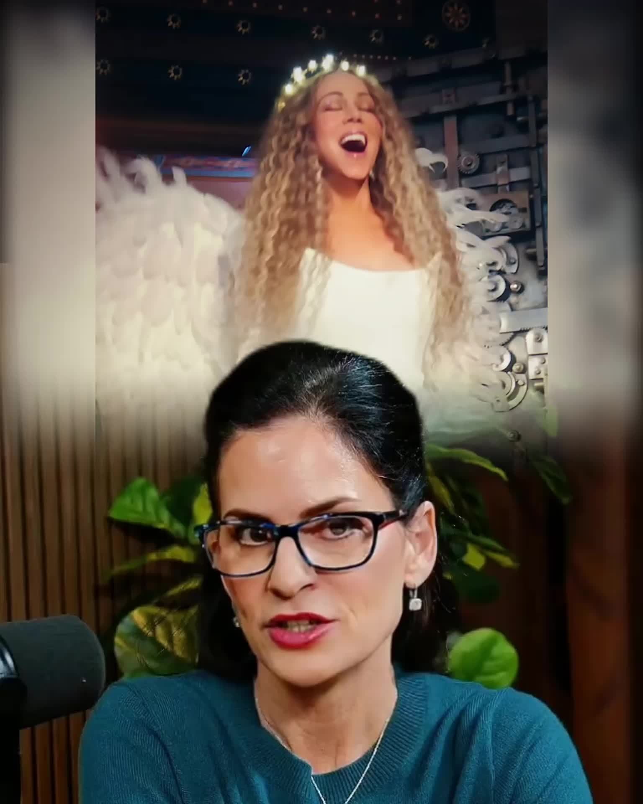
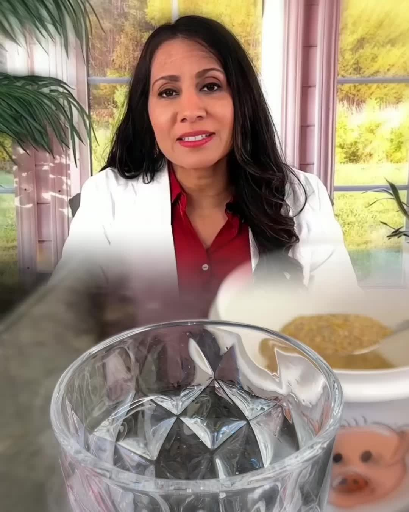
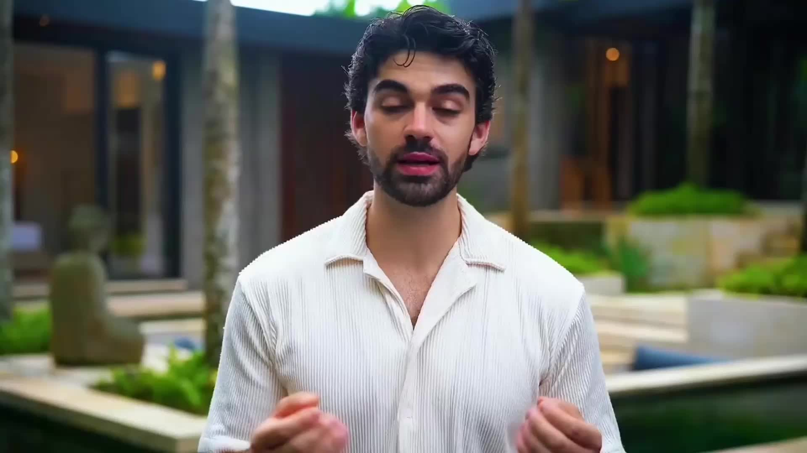
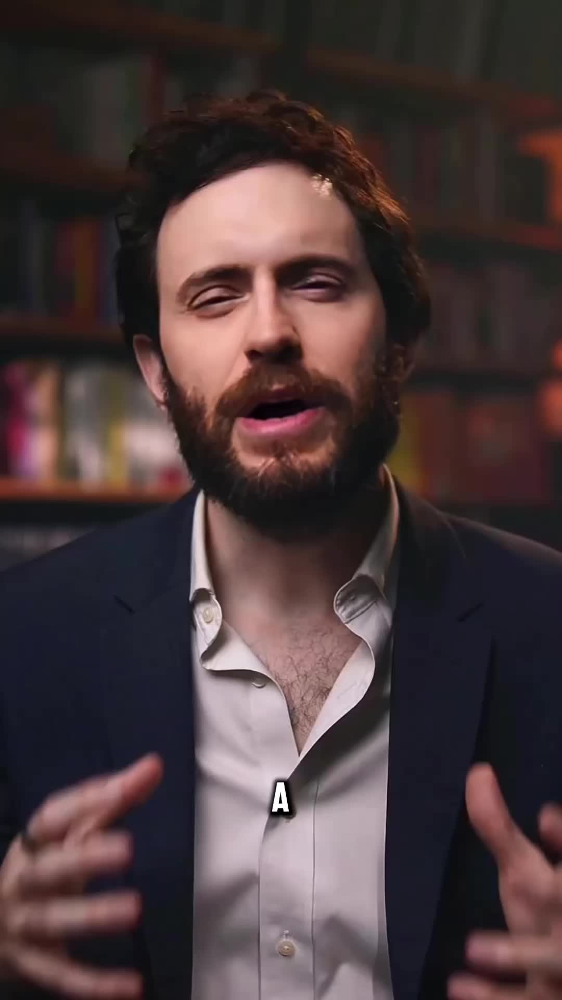
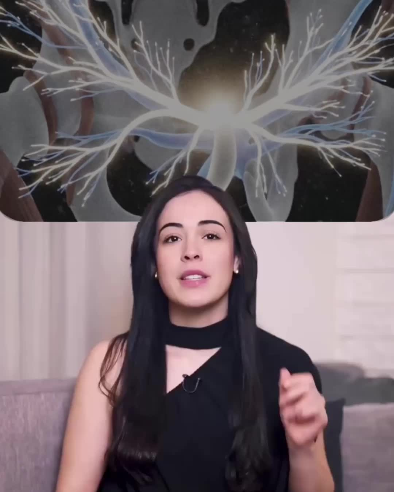
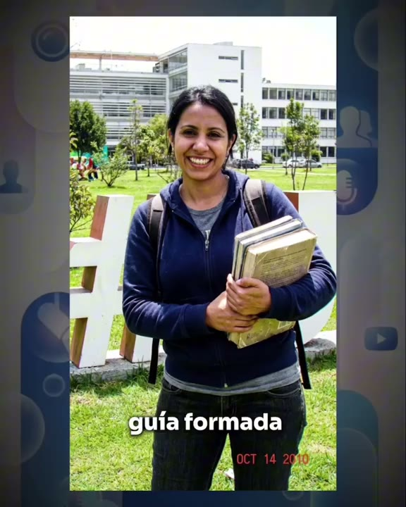

VSL completa
Lipedema

copy-aware editing
Mural
VSL completa

VSL completa

VSL completa

VSL completa

VSL completa

objeção principal
A maioria recebe uma VSL e procura um take bonito. Eu começo antes: leio a copy, marco a função de cada trecho e só depois abro a timeline.
Lead
case 01 / prova imediata
Na lead, “Mounjaro en polvo” não era detalhe. Era um elemento que voltava e precisava ficar na memória. O caminho comum seria uma receita fitness qualquer. A decisão correta era criar identidade.
editor comum
decisão com critério
lead completa
02 / background story
case 02 / autoridade
A fala citava quem ela era, o que viveu e por que tinha autoridade. No corte comum, tudo isso virou uma doutora genérica de banco de vídeo.
editor comum / autoridade genérica
A expert tinha história, rosto e provas. O corte mostrou autoridade genérica e perdeu tudo isso.
minha edição / prova da frase
Foto, manchete, documento e contexto entram no ponto em que a copy cita cada informação da expert.
background completo

sem recorte conveniente
03 / história emocional
case 03 / personagem
A história era de uma mulher. No corte comum, cada stock trazia outro rosto, outra idade, outra vida. A emoção nunca pertencia a ninguém.
editor comum / mulher abstrata
Os takes carregam dor, mas cada cena apresenta uma pessoa nova. A história nunca ganha um rosto.
minha edição / mesma mulher
A personagem volta com a mesma aparência entre os takes. Ela existe o suficiente para a história continuar.
história emocional completa
sem recorte conveniente
04 / mecanismo
case 04 / CGI Medical
GLP-1 e GIP entram aqui como explicação, não como enfeite. A imagem acompanha a frase, não o contrário.
editor comum / enfeite médico
O stock veste a cena, mas GLP-1 e GIP continuam soltos. Fica bonito e vazio.
minha edição / CGI Medical
A edição deixa a relação visível sem fazer pose de laboratório.
mecanismo completo
a explicação inteira
05 / oferta
case 05 / reason why
Se a copy diz “últimos potes”, o galpão quase vazio vira prova. Se existe taxa, filtro ou reembolso, a edição organiza essa causa antes da decisão.
editor comum / ilustração genérica
O stock repete a promessa financeira, mas não deixa visível nem o que é entregue nem o porquê da condição.
minha edição / oferta visualizada
Acesso, filtro de participação, uso da ferramenta, valor reservado e reembolso aparecem junto do motivo que amarra a oferta.
reason why
Se são os últimos potes, aparece o galpão quase vazio. Neste case, a validação mostra por que existe o filtro de participação e como o reembolso fecha a condição.
o que a pessoa entende que recebe
à ferramenta apresentada no vídeo.
como a experiência funciona dentro do celular.
quem participa e por que existe uma validação.
como o valor reservado e o reembolso entram na oferta.
case de sucesso / renda extra
VSL campeã / renda extra
ROI de 1,9 no dia reportado
6 dias em prejuízo
R$ 102.478,32 no painel
a pesquisa antes da timeline
A pesquisa no YouTube e em outras redes mostrou que o público de renda extra consumia conteúdo mais dinâmico, com animações e ilustrações. O padrão não era vídeo genérico de banco.
Ritmo alto, motion, animação e ilustração apareciam com frequência nos conteúdos orgânicos do nicho.
Avatares em mansões, apartamentos de luxo ou diante de carros eram parte do vocabulário visual consumido.
O novo personagem ganhou cenário, roupa, cabelo e barba coerentes, cercado por animações em vez de takes soltos.
depois dos cases
Mas muita gente entra no mercado sabendo mexer no software e sem saber ler uma copy desse jeito. A função de cada bloco, o avatar, o mecanismo e o reason why simplesmente não entram na edição.
É daí que nasce a percepção ruim de donos de operação e copywriters. Eles recebem um vídeo que se mexe, mas não responde ao que foi escrito.
limpa as operações
Minha média de edição nesse estilo fica em 5 a 6 minutos por dia. Trabalho a R$ 60 por minuto e isso limpa as operações sem criar retrabalho.
Média de edição
5 a 6 min/diaPreço por minuto
R$ 60Alterações grátis
3 dias após a entregaAlterações gratuitas por 3 dias após a entrega.
Quantas forem necessárias.limpa as operações sem brigar com o prazo.
Contato direto
próximo passo
Sem formulário e sem etapa intermediária. Continue a conversa por onde ela começou.